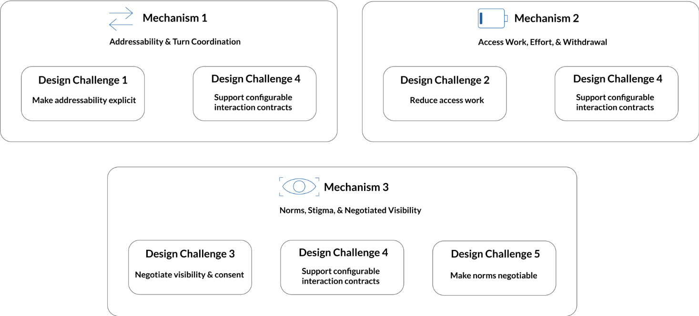
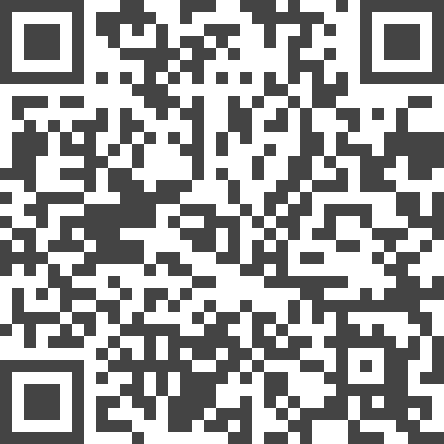

The Ambivalent Experience of Eye Contact for People with Visual Impairments: Mechanisms and Design Challenges

(opens in new tab)
Venue. DIS (2026)
Materials.
DOI(opens in new tab)
Abstract. In mixed-ability collaboration, eye contact is often treated as a default cue for attention and turn-taking. As these signals are primarily visual, they are not reliably accessible to people with visual impairments. While prior work emphasized technical solutions, mechanism-level explanations of their experiences with sighted partners remain scarce. We interviewed 17 people with visual impairments about everyday interactions across work, education, and social settings. Using a critical-realist lens, we link events to plausible causal mechanisms and identify three recurring mechanisms: First, when gaze cannot allocate the floor, addressability hinges on explicit naming. Second, unclear speech entry cues and ongoing access work split attention and build fatigue, sometimes leading to withdrawal. Third, eye-contact norms can skew judgments of participation, prompting active management of visibility. We translate these mechanisms into five design challenges that reframe accessible eye contact as supporting configurable interaction contracts rather than merely making gaze visible.
Received an honorable mention award
Link to this page:
